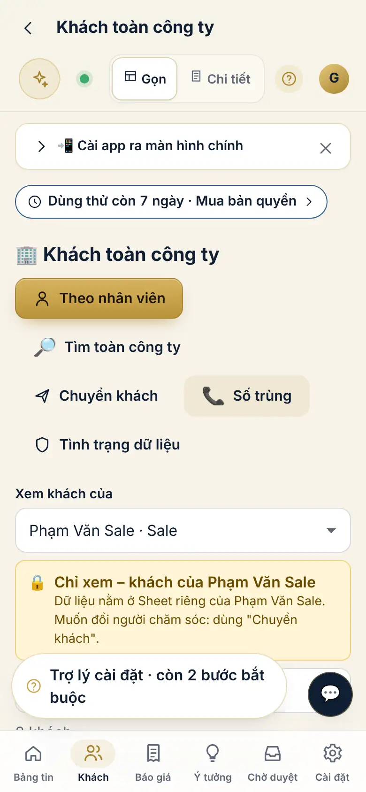

Công ty: khách toàn công ty
Mỗi nhân viên có Sheet dữ liệu riêng. Quản trị xem khách của từng người ở một chỗ – chỉ xem, không sửa.
- Vào Khách › 🏢 Khách toàn công ty.
- Thẻ Theo nhân viên: ở Xem khách của, chọn một người (hoặc 🏢 Kho chung (chưa thuộc ai)).
- Danh sách khách của người đó hiện ra, ghi 🔒 Chỉ xem.

Các thẻ khác:
- 🔎 Tìm toàn công ty – tìm tên/số trong khách của mọi người.
- Chuyển khách – đổi người chăm sóc (xem Chuyển khách khi nhân viên nghỉ).
- 📞 Số trùng – số điện thoại đang nằm ở nhiều nhân viên.
- Tình trạng dữ liệu – mỗi người đã có Sheet riêng chưa, quyền chia sẻ.